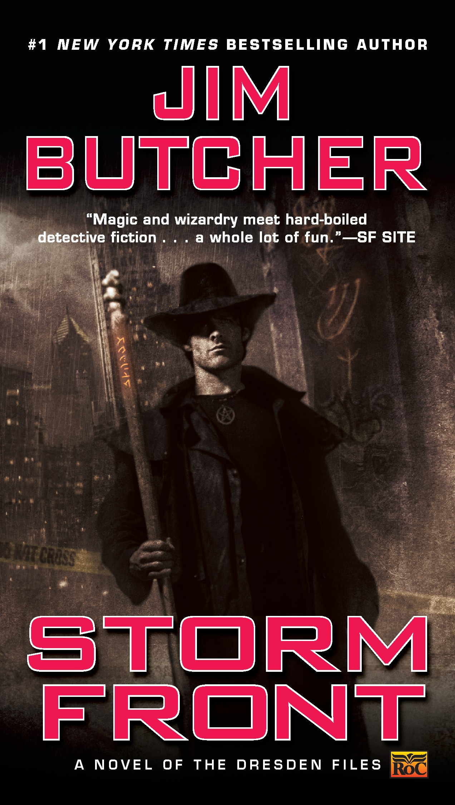

"Storm Front"
- Read on 2021-04-24
- Rating: ️️️️️
- Format: 🎧 (8 hours 1 minute)
I couldn't remember why (or when) I bought this book (and the next two). So, I started it with a "well, let's get this out of the way" type of attitude. What a pleasant surprise it ended up being. A mystery novel in our own world, yet with fantasy items (like wizards (the main character), vampires, fairies, etc) commonly known and acknowledged. This isn't your orphaned boy with a lightning scar story - these seem clearly intended for older audiences. There was some unnecessarily graphic sexual material, and a fair bit of gore (I mean - it was a murder mystery, so I can understand that latter bit). All things told, I'll be diving right into the next installment. (And if finishing the book in three days isn't some indication of how much I enjoyed it, I don't know what it is.)
- Prior: Stealing Home
- Next: Fool Moon